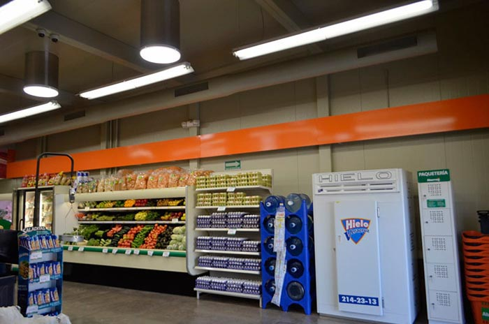
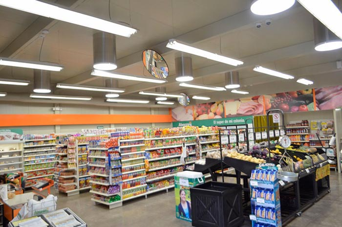
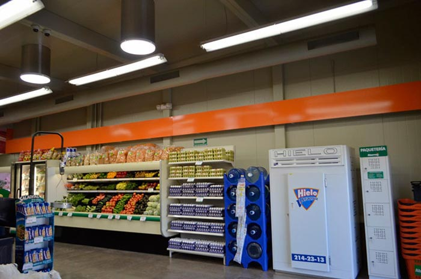
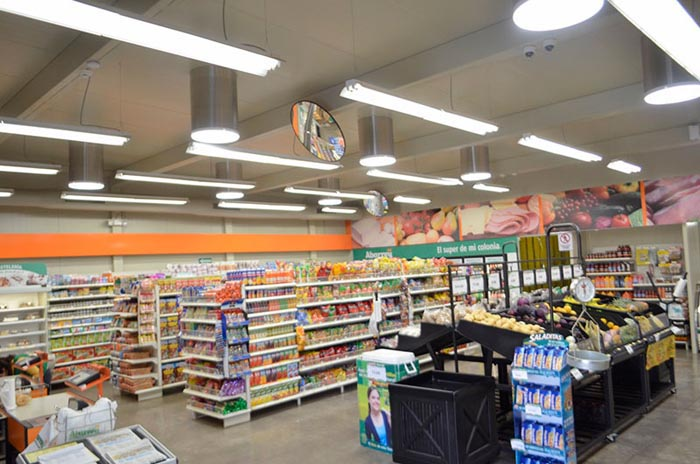

INSULPANEL®
It is a modular panel made up of a self-extinguishing expanded polystyrene core, coated on both sides with prepainted galvanized steel sheets, designed to be installed as:
- Ceiling
- Exterior wall
- Inner wall
- Suspended ceiling
- Facades


It is a modular panel made up of a self-extinguishing expanded polystyrene core, coated on both sides with prepainted galvanized steel sheets, designed to be installed as:
FANOSA® INSULPANEL® offer many benefits; these are some of the main advantages of this construction system.
Panel designed to be placed vertically or horizontally on facades and interior walls or, in a suspended, fulfilling the functions of a suspended ceiling.
It features a G60 type 26 gauge galvanized steel sheet (or equivalent). Insulpanel Muro (Wall) has two types of joints, i.e., Hidden Fix type and Z-Lock type. These configurations provide greater resistance and watertight in the construction system.


Insulpanel® Techo (Roof) is a construction system manufactured with top technology and quality standards worldwide.
Its novel joint between panels is more waterproof than the joint by covers, and due to its structural resistance, it is the ideal system for construction of all types of roofs.
It has a type G60 galvanized steel sheet (or equivalent) on both sides. For the sheet appearance on the inner face, the Mini Ribs or Table profile can be requested.
Insulfoil® is included in the Insulpanel® family, which is a panel with the Insulpanel® components, but with the replacement of one of the sheets (interior or lower) by a polypropylene-based coating, reinforced with a fiberglass-based mesh, i.e. foil-like coating.

You can find all information about our products in downloadable files available for you.
From a bedroom to entire industrial premises, the works made with INSULFOIL MURO and TECHO® can be so different that we put together a gallery with some of them.

Insulpanel FANOSA® Sistema Constructivo utilizado a nivel nacional en Techos y Muros, reconocido por su aislamiento térmico y calidad, es ideal para construir naves industriales, bodegas, casetas, oficinas, viviendas, almacenes, locales comerciales, laboratorios y más.
Presenting Insulpanel by FANOSA; a highly technological system
manufactured under world-class standards of quality.
Insulpanel consists of adjustable panels for walls, covers, and
ceilings, comprised of a core of a self-extinguishing expanded
polystyrene plates covered by both faces with galvanized and
painted steel sheets.
Select the file you want to download, if you cannot find the information you are looking for please contact us to help you.


 


